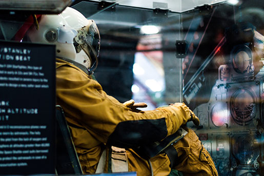
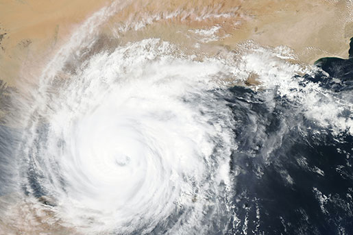

explore together
Come join us at the
Community Science Museum
where we're committed to making science accessible to all!
Family Activities
Are you a young person looking to learn more about science? Come on down to our museum, there’s plenty to see and do.
We have different exhibitions, like dinosaurs and bugs! And a planetarium where you can have a look at the stars and see what happens if a meteor hits a planet.
You can join the Young Stars Club and get to explore and experiment with our team of experts.
During the school holidays we run special holiday clubs where you can join other children your age to go on a journey of discovery.
Read more about our Family ActivitiesLearning Activities
Take your pupils and let them explore and learn right here at the museum.
We can arrange guided tours with specific topis, teach them in our learning laboratory and provide great video presentations that will excite and inspire young minds.
Even before or after your visit here, we can provide you with materials to use in your teaching.
Get in touch with us and we can help you plan an exiting and fun day!
Read more about how you can take your pupils on a visitSpecial Events
Aeronautic Development Lectures
Prof Sheila Widnall, Massachusetts Institute of Technology, will deliever 3 lectures.
Dates: 3/31 (2 lectures), 4/1
Go to space with VR
Go to space without leaving earth!
Dates: march/april
The Power of the elements!
From NEMO Science Museum in Amsterdam, the Energetica Exhibition comes for a visit. Come and experience the Power of the Elements!
Dates: 3/15-5/1
Read more about our Special Eventsalways question, always wonder
Accessibility at the Museum
The museum has wheelchair accessibility ramps. It also has audio guides and braille display signs for the visually impaired.
We try our best to make the museum as accessible as possible to ensure that everyone feels welcome and have a good time visiting us.
Read more about how the museum is accessible.Get Involved
Interested in science and would love to contribute and learn more?
There are various ways you can support the museum. You can donate or become a member.
Or if you want to work at the museum, you can do that as a volunteer or apply for an internship.
See how you can be involvedcuriosity is the secret to life
Our Exhibitions
We believe science should not be confined to the textbook, but brought to life through exhibits. This is why we have over 1000 different exhibits on the many varied subjects of science to explore. Many of these exhibits are designed for you to interact with.
See the complete list of our exhibitionsNight in the Museum
Get your family together for an exciting night in the museum as you sleep over beside dinosaurs and science displays. Bring your own sleeping bag and get ready to rough it as we go exploring the wonders of science.
Read more about our "Night in the museum"-event
Researcher?
Are you looking to get involved with our team of researchers and academics?
Our museum offers various ways for you to use our resources and contribute towards them. We have online records, laboratory space, and a working relationship with a number of universities around the country.
Get in touch with us if you want to connect
Caféteria and Museum Shop
Our caféteria can offer a wide variety of hot and cold meals, from simple buns to dinners.
In the museum shop you can support the museum by bying gifts for yourself or others.
Find our opening hours herescience is magic that works
Plan your day!
- Monday: closed
- Tue-wed-thu: 10 am - 16 pm
- Friday: 10 am - 19 pm
- Saturday: 9 am - 16 pm
- Sunday: 9 am - 13 pm
FREE ADMISSION
Guided tours kr 70,-/per person
Special Events may have additional costs
We are located at:
Community Science Museum
Gotaasalleen 6
2050 Jessheim
Norway
Caféteria and Museum Shop